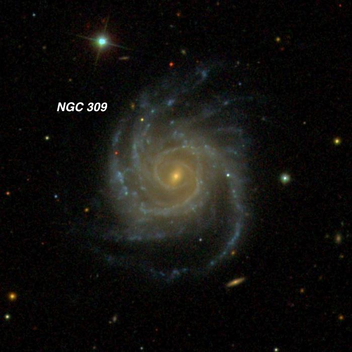
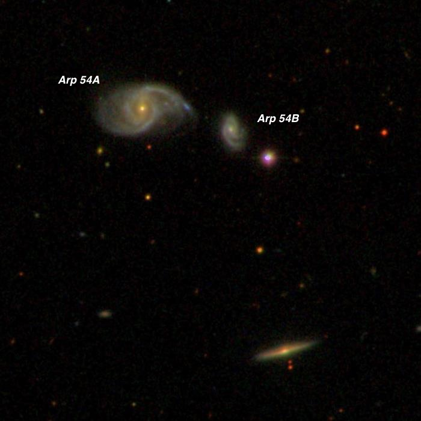
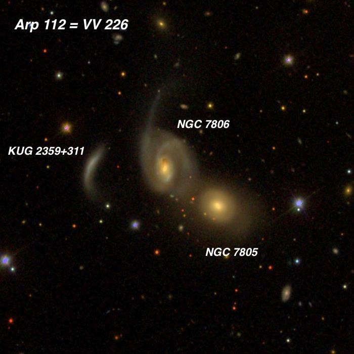
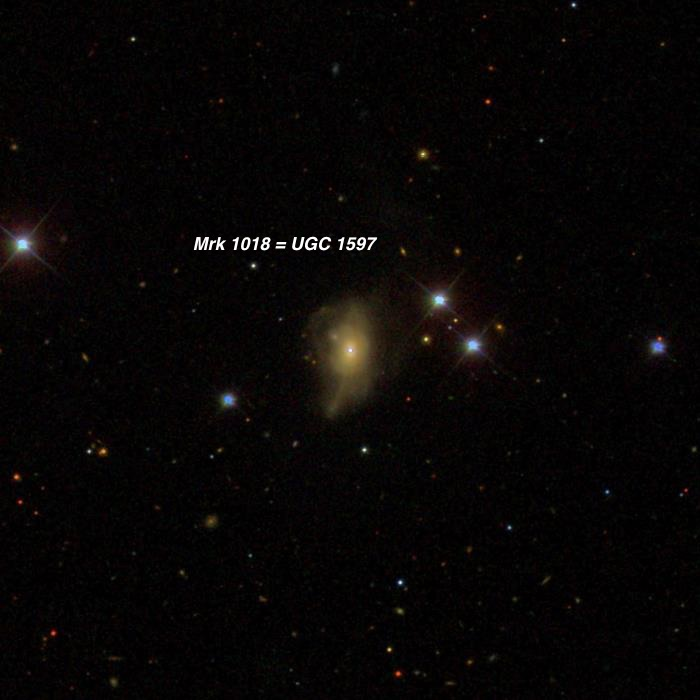
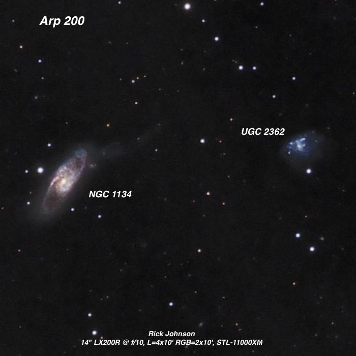
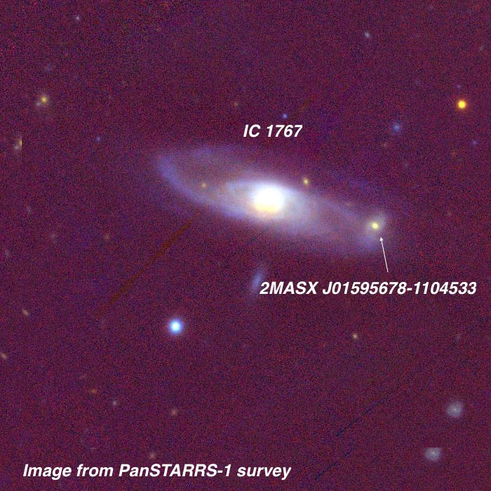
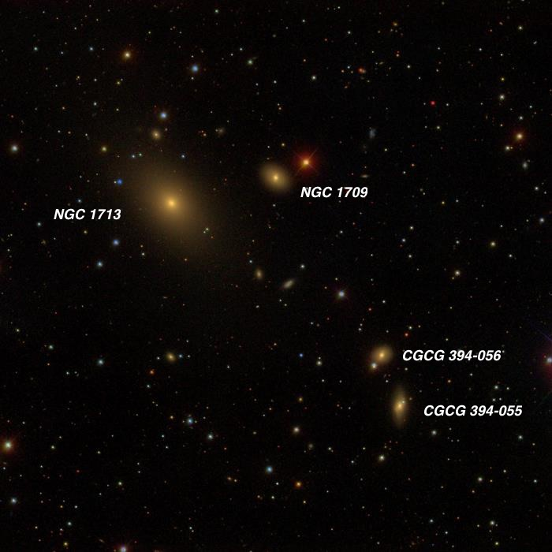
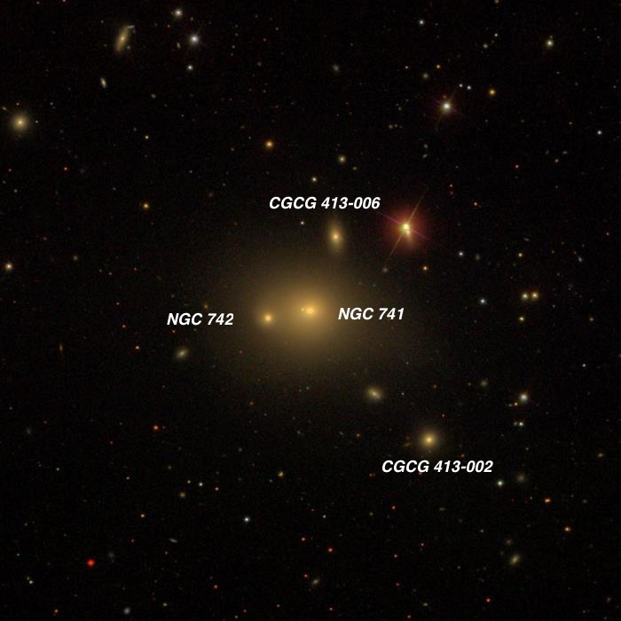
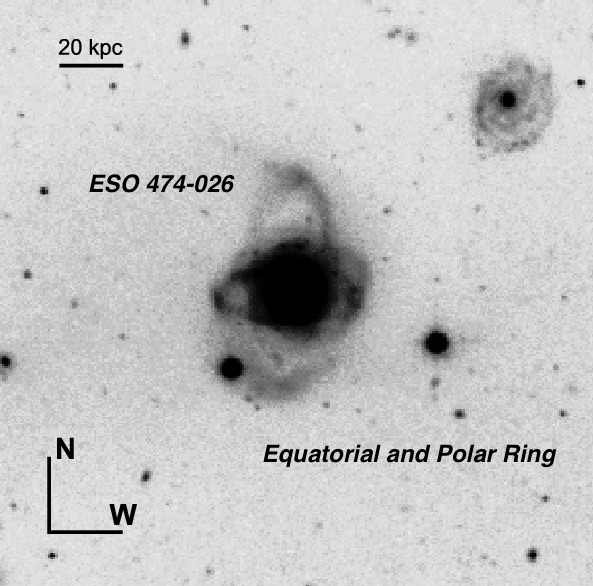

Blazers, Seyferts, Double Rings and more.
On two consecutive Wednesdays (21st and 28th of December) I observed under clear skies at Lake Sonoma, located 30 miles north of Santa Rosa just above numerous Sonoma county vineyards. On both evenings we had small groups at the Lone Rock lot, in the hills above the lake (the photo was taken as I arrived on the 21st). The first Wednesday I was joined by Bob Douglas with his 28-inch f/3.7 Starstructure and Carter Scholz with a homemade 16-inch with Zambuto optics. Conditions were excellent - perfectly clear, fairly good transparency for this site (SQM readings hit 21.4 by 11:00 PM), perfectly calm with no dew. I returned on the 28th with Bob and we were joined by Mark Toney (20” Teeter Dob) along with a friend. Again we had perfectly clear skies with SQM readings in the 21.3-21.4 range and good seeing. Both nights we started observing around 6:30 and closed shop by 12:30 and over those 12 hours were very productive – I logged a total of 90 different objects in my 24-inch f/3.7 Starstructure. My observing list in included a mix of interacting and other unusual galaxies as well as a few galaxy groups and I’ve highlighted several of these below.
I started off both evenings by taking a look at the amazing blazar CTA 102, which at a redshift z = 1.037 has a light travel time of 8 billion years! Normally this quasar shines dimly at 17-17.5 magnitude, but is known to be an OVV — an Optically Violent Variable quasar. In the past couple of months it experienced a historic outburst reading reaching mag 12.7-12.8 when I took a look in November. It’s been fluctuating wildly in the past few weeks — on the 21st I logged it at mag 12.7 and was impressed that it was easily seen when I added an 8-inch aperture stop to my scope. But on the 28th it appeared at least a half-magnitude brighter than a nearby mag 11.7 star, so was certainly mag 11.1-11.3 and has now been glimpsed in down to a 50mm refractor. Wow!! When I later checked on the AAVSO web site, I found that several observers measured magnitudes in the 11.2 range, so my estimate was accurate. This latest incredible outburst is over 300 times brighter than its “rest” magnitude. I just noticed the Fermi Gamma-ray Space Telescope also recorded an outburst of 135 times its average gamma-ray flux on the 28th, making CTA 102 the brightest gamma-ray source in the sky.
— Steve Gottlieb

NGC 309 + IC 1602 00 56 42.8 -09 54 50 V = 11.9; Size 3.0'x2.5'; Surf Br = 14.0; PA = 175° (data for NGC 309)
This beautiful grand-design galaxy is one of the largest (diameter ~225,000 light years) and most luminous known spirals (absolute blue magnitude = -22.52). Even at a distance of 260-270 million light years it has a V mag of 11.9! In fact Arp used this galaxy as an example of a discordant redshift — he felt it was just too large for its redshift and mentioned that M81 could comfortably fit in between its gargantuan spiral arms. It also appears to be something of supernova factory, hosting 4 in the past 17 years: SN 2014ef, 2012dt, 2008cx and 1999ge.
In my 24” it was fairly faint but moderately large, roundish, fairly low but uneven surface brightness, contains a brighter core that increases somewhat to the center. I noted hints of spiral arms in the halo (slightly brighter arcs) — this was before viewing an image. A mag 12.5 star is 2’ NNE and mag 15 star is off the west side, 1.5' from center.
Nearby is IC 1602, which lies 13’ WSW. This galaxy is the brightest member of Abell Galaxy Cluster (AGC) 117 with a redshift-based (z = .055) distance of ~738 million light years. I noted IC 1602 as fairly faint, round, 20" diameter, slightly brighter nucleus. AGC 117 is one of the galaxy clusters in the Pisces-Cetus Supercluster, one of the largest known structures in the universe (see http://www.atlasoftheuniverse.com/superc/psccet.html ).

Arp 54 = VV 453 02 24 00.9 -04 41 42 V = 14.2 / 15.9; Size = 1.0’x0.55’ / 0.4’x0.3’
Arp 54 is a little-known interacting pair at a distance of ~570 million light-years. It shows up in infrared surveys, as a radio source as well as an x-ray source, so it apparently is experiencing very vigorous star formation or perhaps has an obscured active galactic nucleus (AGN) — both signs of an interaction. Arp placed it in his classification of "Spiral galaxies with high surface brightness companion on arm”, though it doesn’t appear that the arm from the larger galaxy reaches the smaller galaxy. The edge-on to the south is not related to Arp 54.
Using 375x the larger galaxy ( PGC 9113 ) appeared fairly faint, elongated 3:2 E-W, 30"x20", fairly low surface brightness, weak concentration. Its interacting companion PGC 9107 is just 0.9' WSW. It was a very small faint glow, only 12" diameter. Although it easily popped into view with averted I couldn't hold continuously. A mag 14.4 star is 0.5’ SW.

NGC 7805 /7806 = Arp 112 = VV 226 00 01 28.4 +31 26 16 V = 13.3 / 13.5; Size 1.2’x0.9’ / 1.1’x0.8'; Surf Br = 13.2 / 13.2; PA = 47° / 20°
Arp 112 is an interacting triple system consisting of NGC 7805/7806, along with KUG 2359+311, a strange arc-like galaxy. NGC 7806 , the galaxy in the middle of the image, is also a gravitationally disturbed system with a thin tidal tail to the north. It’s not known whether KUG 2359+311 (Kiso Ultraviolet Galaxy) is a pre-existing third galaxy or the remains of one of the other galaxies — it looks like a detached spiral arm to me.
Through my 24”, NGC 7805 appeared moderately bright (V = 13.3), fairly small, compact, very slightly elongated SW-NE, 25"x20", small bright core and even brighter stellar nucleus. Forms a similar pair with NGC 7806 just 50" NE. A mag 13.5 star is 1' west. Other than a different orientation, NGC 7806 (V = 13.3) is a visual twin of 7805. KUG 2359+311 was only marginally glimpsed in the 24-inch (V = 16.3), so I asked Bob Douglas if we could look at Arp 112 in his 28-inch. By bumping the power to 427x we were able to glimpse a small narrow glow in his scope.

Markarian 1018 = UGC 1597 02 06 16.0 -00 17 29 V = 13.9; Size = 1.0’x0.5’; PA = 0°
Visually, there’s nothing remarkable about this galaxy, which appears to be a coelesced merger of two galaxies. Using 432x I logged it as "fairly faint, slightly elongated N-S, 25"x20". Two 13th magnitude stars are 50" NW and 1.0' W and a mag 14.5 star is 1.0' ESE."
But astrophysically Mrk 1018 is quite unusual. It’s a Seyfert galaxy, a type of spiral with an active galactic nucleus powered by a massive black hole and whose spectrum contains emission lines from highly ionized gas. Type 1 Seyferts contain extremely broad optical emission lines indicating the nucleus contains hot gas near the accretion disc that’s moving/expanding at very high speeds. Type 2 Seyferts display only narrow emission lines, while Seyfert 1.5, 1.8 and 1.9 are intermediate cases. The two main classes are thought to reflect different activity levels of black hole feeding, though possibly the viewing angle of the accretion disc is a factor.
Historically, Mrk 1018 has been classified as a type 1.9 Seyfert. But in the 1980s, prominent broad lines appeared in the optical spectrum and it changed its classification to a Type 1 AGN. In 2006, though, it was announced that in the past five years Mrk 1018 has returned to its original state type 1.9 state (see https://arxiv.org/pdf/1609.04423v1.pdf ). This second transition is thought to be due to a decrease in the black-hole accretion rate.

Arp 200 = NGC 1134 + UGC 2362 02 53 41.2 +13 00 53 V = 12.1; Size 2.5'x0.9'; Surf Br = 12.8; PA = 148°
Halton Arp placed NGC 1134 in his category of “Galaxies with material ejected from nuclei”. Probably he is referring to the “tidal plume” off the upper right end of the galaxy generally extending in the direction of UGC 2362, the chaotic blue galaxy to the west. These two galaxies have identical redshifts so likely experienced a “close encounter” in the past with the arm of NGC 1134 pulled out by gravitational tides.
At 375x NGC 1134 appeared fairly bright, elongated 2:1 or 5:2 NW-SE, ~1.2'x0.6', sharply concentrated with a bright core and fairly bright, sharp stellar nucleus. It was slightly brighter along the east edge with averted vision — probably the bright section of the eastern spiral arm on Rick Johnson’s image. A mag 13.6 star is 50" NE of center. UGC 2362, 7’ to the west, appeared faint, very low surface brightness patch ~20" diameter (probably the brighter central part of this Magellanic system). A mag 14.8 star is 0.8' S.

IC 1767 01 59 59.4 -11 04 44 Size 1.7'x0.6'; PA = 75°
At 375x I called this galaxy "fairly faint, moderately large, elongated 5:2 WSW-ENE, ~1.2'x.0.5', large brighter core, no sharp nucleus. The halo brightens slightly at the WSW edge - perhaps a knot in the galaxy?"
I was pleased when I checked later and found the PanSTARRS-1 image above clearly shows a small galaxy (identified as 2MASX J01595678-1104533 in NED), at the position I noted. Although this galaxy appears to be superimposed, I don’t know whether the companion is actually at the same distance (no published redshift) or possibly in front of IC 1767.

NGC 1713 group = LGG 120 = WBL 110 04 58 54.5 -00 29 20 V = 12.7; Size 1.4'x1.2'; Surf Br = 13.3; PA = 45° (data for NGC 1713)
NGC 1713 is the brightest in a loose galaxy group called LGG 120 or WBL 110 at roughly 200 million light years. The group includes NGC 1709 and several fainter UGC and CGCG galaxies. NGC 1713 appeared fairly bright, oval 4:3 SW-NE, 0.8'x0.6', gradually increases to the center. NGC 1709, just 2.7’ WNW, appeared fairly faint, elongated 4:3 SW-NE, ~0.4'x0.3', very small or stellar nucleus. A mag 12.3 star is 50" NW. The following members of the group were tracked down (offsets given with respect to NGC 1713). Only the two closest are shown on the SDSS image above.
CGCG 394-055 , 7.7’ SW: Fairly faint, fairly small, slightly elongated ~N-S, ~20"x15", slightly brighter core. Forms a close pair with CGCG 394-056 1.3' NNE.
CGCG 394-056, 6.6’ S: Faint, very small, round, 12" diameter. A mag 13.5 star is attached at the southeast end. Mag 8.9 HD 31724 is 5' W.
UGC 3221 , 24’ S: Fairly faint, thin edge-on 6:1 NNW-SSE, ~30"x5", even surface brightness. A mag 14.5 star is superimposed at the south end. A mag 9.2 star is 4.7' S as well as a nearby mag 9.9 star.
UGC 3214 , 26’ NW: Moderately bright, fairly large edge-on 4:1 SW-NE, at least 1.6'x0.4'. Contains a bright, elongated bulging core and much fainter extensions.
CGCG 394-053 , 21’ NNW: Fairly faint, fairly small, elongated 2:1 NW-SE, 30"x15”.

NGC 741 group 01 56 21.0 +05 37 44 V = 11.1; Size 3.0'x2.9'; Surf Br = 13.5 (data for NGC 741)
This group (called WBL 061) resides in Pisces at a distance of ~250 million light years and is dominated by the NGC 741/742 double system. NGC 741 has an unusually large halo, sometimes indicative of galactic cannibilism and if you look carefully there’s a small stellar like object immediately to the left of the nucleus of NGC 741. Perhaps a former companion that strayed too close and is now falling into the nucleus of NGC 741? NGC 741 has a extended X-ray halo reaching a distance of 19’ from its center. Furthermore, twin radio jets emerge from the nucleus of NGC 742 and spread into a larger lobe that encircles NGC 741.
Visually, NGC 741 appeared bright, moderately large, round, sharply concentrated with a small very bright core that increases to the center. The halo increases with averted to over 1’ diameter. A mag 11 star is 2.4' NW. NGC 742 is just 0.8' E of center at the edge of the halo at a projected separation of ~55,000 light years. This is a small galaxy but has a high surface brightness. It was moderately bright, round, 15” diameter. The following half-dozen galaxies are within 15’ of NGC 741 and share the same redshift.
CGCG 413-006 (often misidentified as IC 1751 ), 1.5’ NW: Fairly faint, very small, slightly elongated N-S, 0.3'x0.2', sharp stellar nucleus. The mag 11 star lies 1.4' W.
CGCG 413-002 , 3.3’ SW: Fairly faint, very small, round, 12" diameter.
CGCG 413-001 , 9.5’ NW: Very faint, very small, elongated ~2:1 ~E-W, 18"x9”. Once picked up could just hold continuously with careful averted vision.
CGCG 413-010 , 11’ NNE: Faint, very small, irregularly round, ~15"x12".
UGC 1425 , 12’ NE: Moderately bright, small, roundish, 18" diameter, high surface brightness, occasional sharp stellar nucleus. Increases a bit in size with averted.
UGC 1435 , 15’ E: Faint, oval 3:2 SW-NE, 30"x20", very low surface brightness patch, no core or zones. Collinear with two 14th magnitude stars 2' and 3' E.

ESO 474-026 = Arp-Madore 0044-243 00 47 07.5 -24 22 14 V = 13.7; Size 1.2'x0.8'; PA = 175°
ESO 474-026 is a unique double-ringed galaxy with two perpendicular rings -- both an equatorial ring and a polar ring surrounding a central nearly spherical galaxy (the only component that was visible). It is thought to be have resulted from the major merger of two similar mass haloes. There is no nearby “hit and run” collider galaxy in the vicinity. ESO 474-026 is on a list of the most luminous galaxies (Cappi et al. 1998) and a strong source of far-infrared and CO emission. Its nuclear spectrum indicates active star formation.
Visually it appeared fairly faint, irregularly round, 25" diameter, very small bright nucleus with a stellar peak. The Redshift-based (z = .0527) distance is roughly 700 million years so I wasn’t expecting to see anything of the ring structures. But it was fun to contemplate this blazing beacon that shines at a relatively bright mag 13.7 over this vast distance.